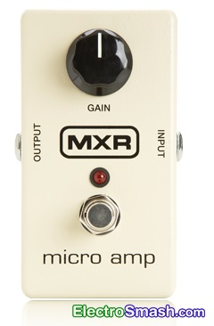
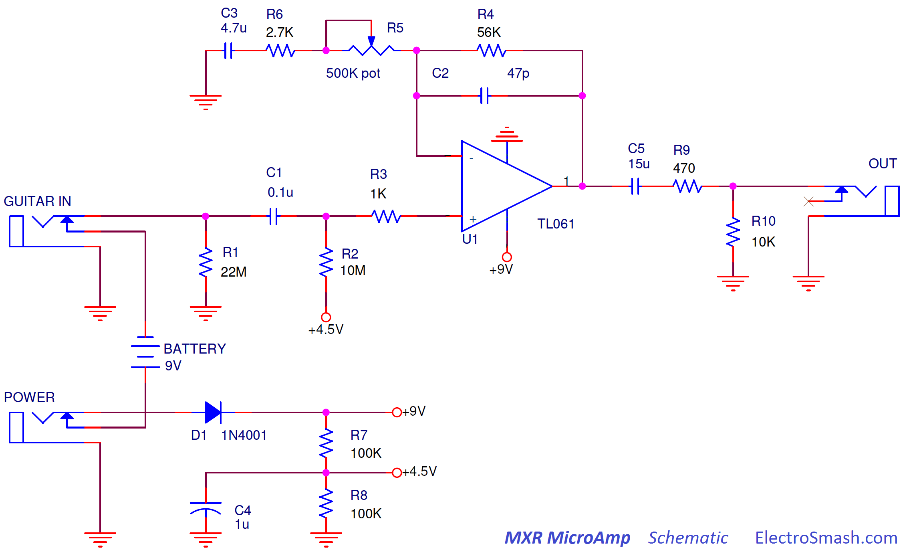
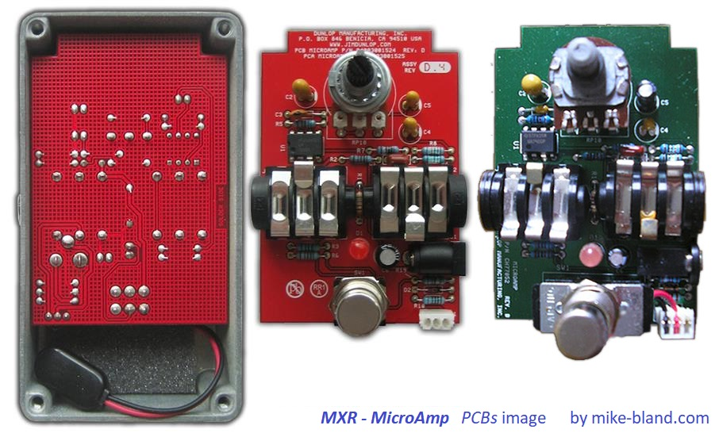
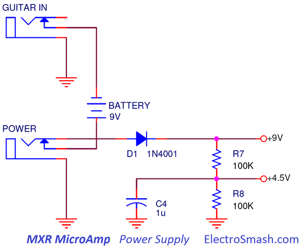
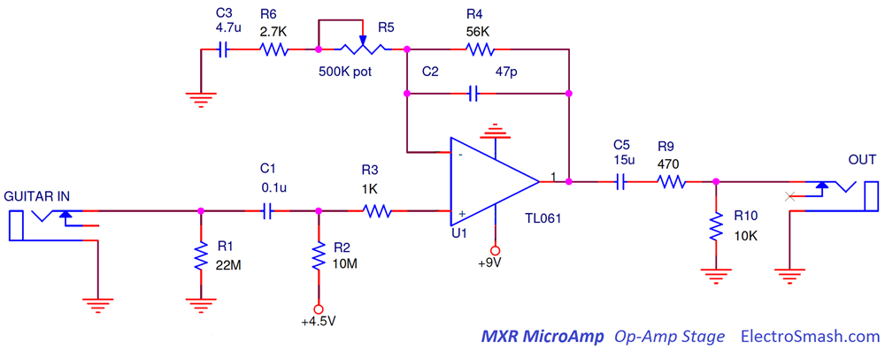
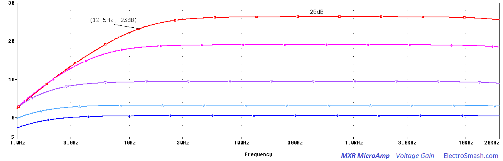
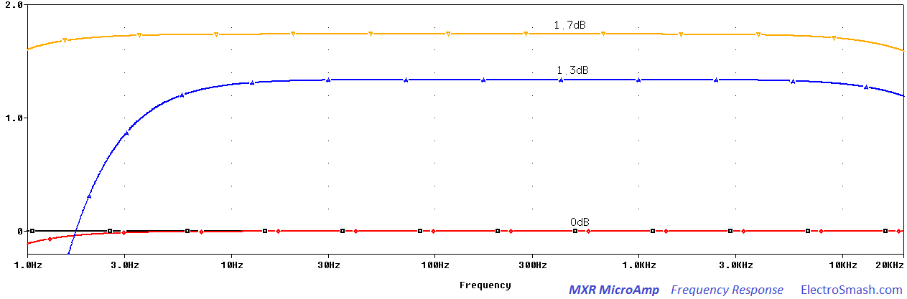

MXR MicroAmp Analysis
The M-133 MicroAmp is a clean boost/volume pedal, part of the first Reference Series by MXR released between 1973 and 1984. The original stompbox did not have power-on LED or A/C connector. Jim Dunlop bought the MXR licensing rights and currently manufactures reissues of the classic MXR effect.

The MXR Micro Amp is designed to be a transparent clean volume booster; it does not color or modify the guitar tone. The circuit is, in fact, an un-distorted redesign of the previous M-104 MXR Distortion+ pedal.
The main application of this pedal is to do louder solos. It can also supply a permanent boost in a long effects chain or cables where the signal drop is a problem. Placing it before the amp the signal boost will drive the preamp harder and into more saturation.
Table of Contents.
1. MXR MicroAmp Schematic.
1.1 Power Supply Stage.
1.2 Op-Amp Amplifier Stage.
2. MXR MicroAmp Frequency Response.
3. Resources.
1. MXR MicroAmp Schematic.
The MXR Micro Amp circuit can be divided into two blocks: Power Supply Stage and the Op-Amp Amplifier.

This simple and reliable design that uses only 1 op-amp and 1 potentiometer will boost the guitar signal up to 26dB, giving a clean flat frequency response.
MXR - MicroAmp Circuit Layout
The circuit is built in a double layer PCB with the potentiometer, led, jacks and footswitch mounted directly on the PCB, this is useful in order to simplify wire connections and save money during mass production. There are several PCB releases in green and red color with minor component modifications due to manufacturing component resourcing and Dunlop hand over.

MXR MicroAmp Bill of Materials / Parts List:
C1 0.1u
C2 47p
C3 4.7u
C4 1u
C5 15u
D1 1N4001
R1 22M
R2 10M
R3 1K
R4 56K
R5 500K pot (Reverse Log)
R6 2.7K
R7, R8 100K
R9 470
R10 10K
U1 TL061
Jack IN / Jack OU
1.1 Power Supply Stage.
The Power Supply Stage provides energy and bias voltage for the circuit:

- The 9V supply will feed the op-amp, with a simple 100K resistor divider (R7, R8) 4.5 Volts are generated to be used as a bias voltage (also known as a virtual ground).
- The resistors junction (+4.5V) is decoupled to ground with an electrolytic capacitor C4 (1uF) which removes all ripple from the supply voltage.
- The diode D1 protects the pedal against reverse polarity connections.
- The stereo in jack is used as an on-off switch, connecting the battery (-) terminal to ground when the guitar jack is plugged.
1.2 Op-Amp Amplifier Stage.
The signal booster is a non-inverting op-amp stage which provides high input impedance, voltage gain, and signal filtering:

The op-amp is configured in a classic non-inverting topology, the resistors R4, R5, and R6 set the voltage gain as it will be seen in the Voltage Gain Section. Several capacitors C1, C2, C3, and C5 will filter the guitar signal, always keeping a flat response as it is explained in the Frequency Response Section.
- The 22MΩ input resistor R1 next to the input jack to ground is a pull-down resistor which avoids popping sounds when the pedal is switched on. The input pull-down resistor becomes the maximum input impedance of the pedal.
- The (+) input is biased to 4.5V through the R2 resistor (10MΩ), keeping the virtual ground at 4.5V and being able to amplify bipolar guitar input signals.
- The 500K potentiometer R5 is Reverse Log. You can still use a Linear potentiometer but the action of it will not be evenly spread across the whole pot range. As you can see in the table below, everything occurs between 0 and 50K (and thats why a Reverse Log pot is needed):
R5(kΩ) GAIN
0 21.7
50 2.06
100 1.54
150 1.36
200 1.27
250 1.22
300 1.18
350 1.15
400 1.13
450 1.12
500 1.11
MXR MicroAmp Input Impedance.
The input impedance is defined by the formula:
6.8MΩ is a good input impedance, not loading the guitar pickups and preventing tone sucking. As a rule of thumb the input impedance of a pedal should be 1MΩ minimum.
MXR MicroAmp Output Impedance.
The output resistor network composed by R9 and R10 will limit the output current; even if the output jack is connected to ground the op-amp will see a load of at least 470Ω, limiting the output current and protecting the operational amplifier. The TL061op-amp has an internal output resistance of around 100Ω.
The output impedance is defined by the formula:
539Ω is good output impedance, keeping signal fidelity. It is a good practice to keep output resistance of a pedal below 10KΩ.
The voltage gain is defined by the non-inverting operational amplifier and the output voltage divider formed by R9 and R10:
- For Single coil pickups with an output level of 100mVpp (approx.), the maximum gain will boost the signal to 2.06V.
- For Humbuckers with an output level around 500mV - 1Vpp, the maximum gain will make the signal 10 to 20V!. In this case, the signal will clip due to the op-amp power supply limits (9V).

In the image above, the output signal voltage level is shown sweeping the volume potentiometer. The gain goes from 0 to 26dB as calculated before.
2. MXR MicroAmp Frequency Response.
The tone response in a boost/volume pedal aims to be transparent, not modifying the contents of treble or bass. However, some signal filtering is always needed to keep the low-frequency hum and the high harsh harmonics out of the audio response.
To do so, 4 capacitors are used to place 4 poles and tailor the tone response:
- C1: Together with R3 and the input resistance of the op-amp forms a high-pass filter. This input cap will just remove and DC content from the guitar signal, it has no effect at all on the audio signal.The cut-off frequency can be calculated as:
- C2: The small 47pF C2 capacitor across the feedback loop works as a low-pass filter, avoiding instability and softening the corners of the harsh harmonics, mellowing the response.
- C3: This capacitor and the series resistors R5 and R6 from the (-) input to ground act as high-pass filter. Many other guitar pedals like the Tube Screamer (C3), the Pro-Co Rat (C5, C6), the Boss DS-1 (C8), etc have a cap at the same pont. The intention is to attenuate low frequencies that can overload the op-amp, causing instability or hum. The cut frequency can be calculated as:
- C5: The output capacitor C5 acts like a high pass filter together with R9 and R10. Being R10>>R9 the cut-off frequency is:

In the above graph, the gain potentiometer is set in the mid position (250KΩ). It is clear that Micro-Amp is essentially a flat booster.
- The black signal is the guitar input signal.
- The red signal is the signal after the first high pass filter C1 R3 with fc=0.15Hz. The guitar DC and hum is removed here. It can be seen how the red line is rolling-off in the bass frequencies below 3Hz.
- The yellow signal is the signal after the op-amp stage, filtered with the high-pass ( formed by C3 ) and the low-pass (created by C2).
- The blue signal is the output signal at the jack, the gain is slightly lower due to the R9 R10 voltage divider. Additionally, the high pass filter C5 with fc=1.06Hz removes useless bass harmonics. This resulting output signal is completely flat in the audio spectrum but removing the excess of bass and treble frequencies.
MXR MicroAmp Op-amp: The TL061
The TL061 op-amp used in MicroAmp is very close to TL051, TL071, and TL081. TL081 is the base model, TL071s is less noisy, TL061s have low current draw and TL051s have a slightly better datasheet. If the battery life is not a restriction, the best bet is the TL071. The TL061 was chosen to have the best battery life and because the noise level in this application may not be critical.
3. Resources.
MXR Micro Amp True Bypass Modification by Mike Bland.
MXR MicroAmp clone Thread in DIYstompboxes.
My sincere appreciation to S. Hale and M. Barnes for your help with this analysis.
Thanks for reading, all feedback is appreciated
Some Rights Reserved, you are free to copy, share, remix and use all material.
Trademarks, brand names and logos are the property of their respective owners.
Rescued from a 2022 Wayback Machine capture of the original electrosmash.com article, which is no longer online. Some links to pages outside this archive have been removed. The original PDF export of this article is in the pdf backups folder.